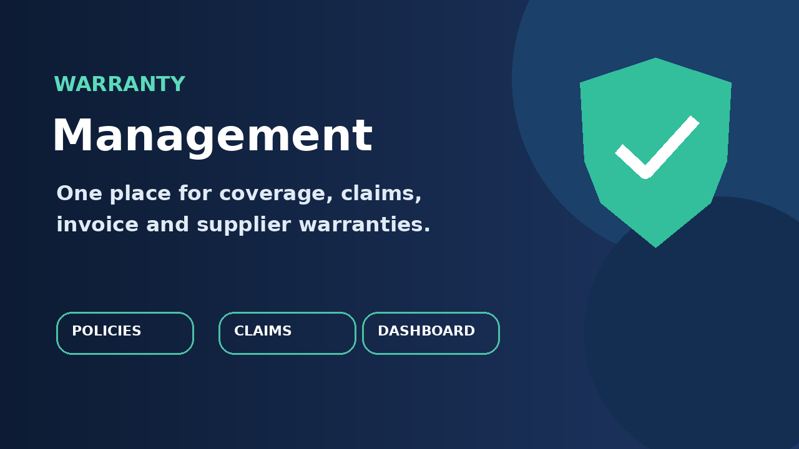

Manage warranty policies and product coverage, register customer warranties from posted invoices, record supplier warranties from vendor bills, follow purchase order traceability, process claims, and review expiry activity in one dashboard.

Use the customer invoice action to select policies, serial numbers and coverage dates for eligible goods.
Register vendor bill coverage and retain purchase order line references when available.
Odoo 19 Community or Enterprise. Accounting and Purchase are required.
Publisher support contact must be added before publication.